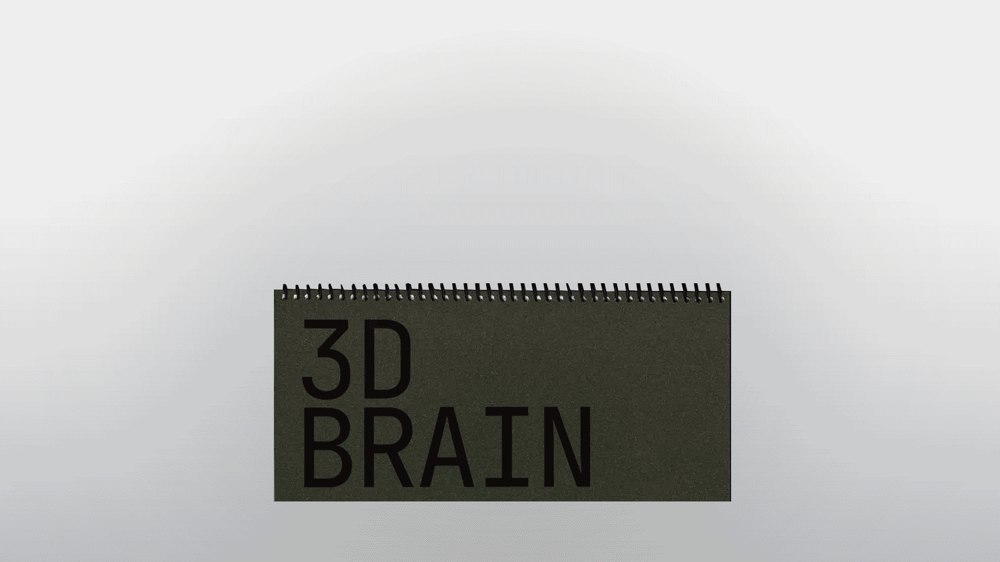
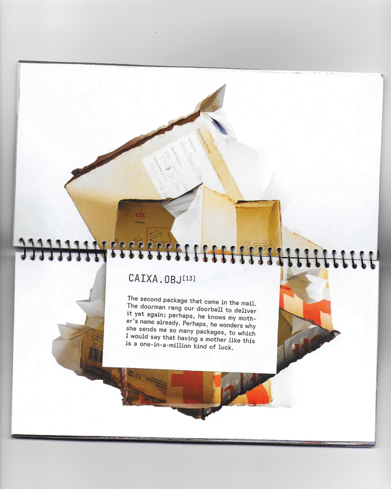
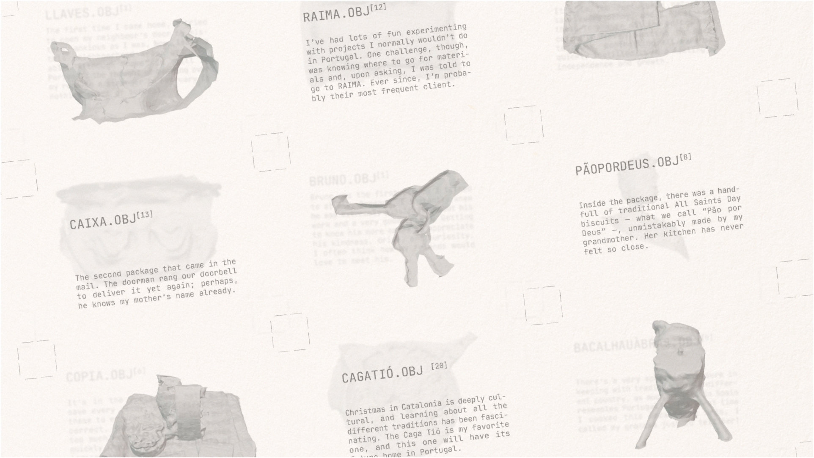
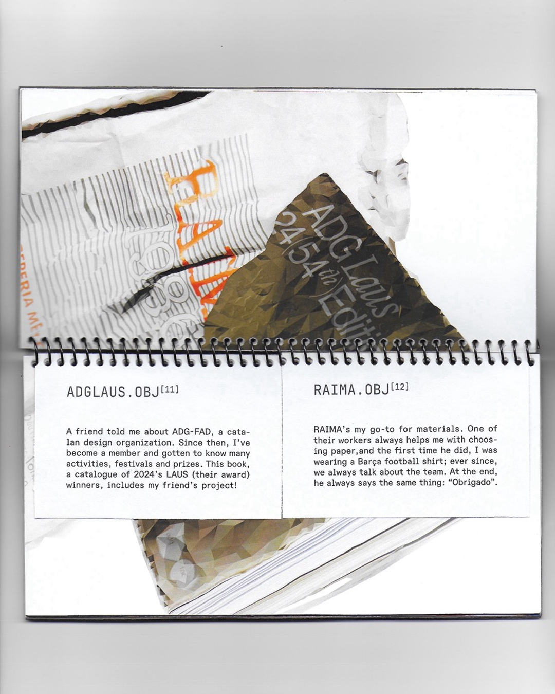
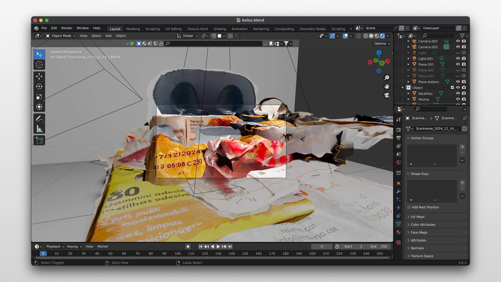
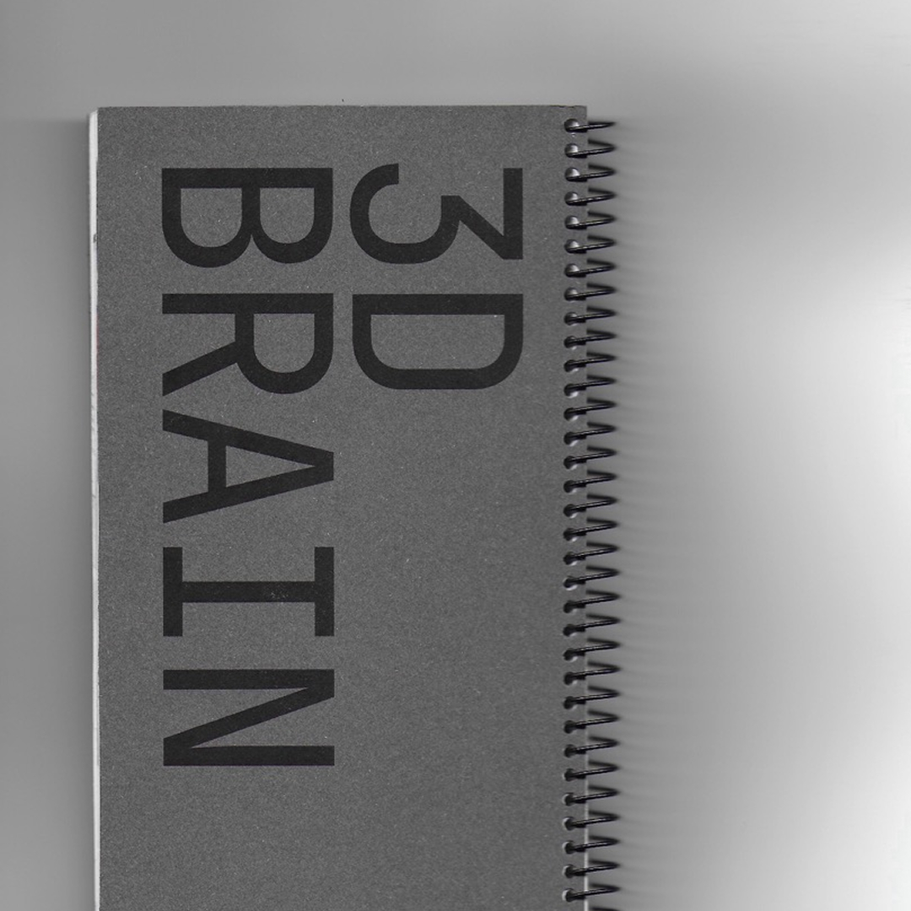
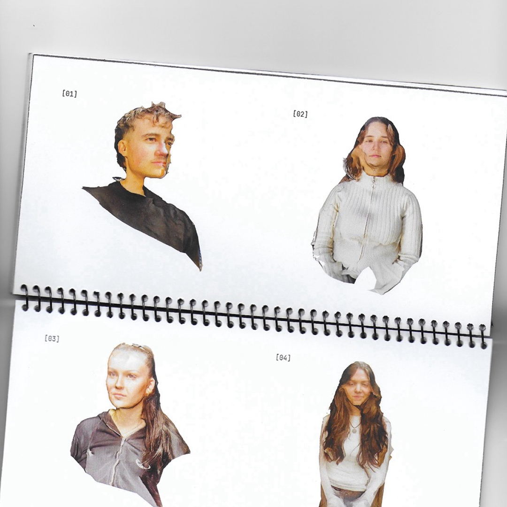
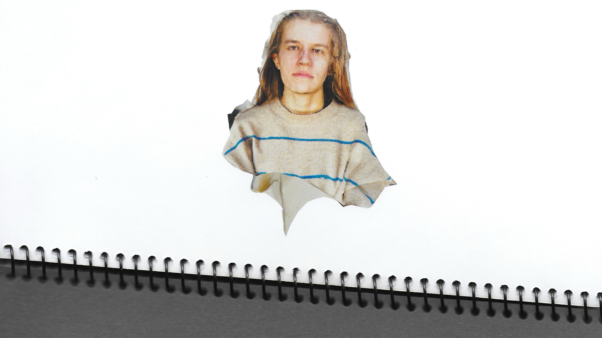

[Proj. 03]
EDITORIAL, 2024
Creative Direction & Design
Mariana Esteves
Context
Developed at BAU Barcelona
"3D BRAIN" is a publication-diary about the space between the objects that accompany our lives and the versions of them we carry in our heads. The things we're attached to come to mean much more than what they physically are. Over time, their meaning shifts to fit our own memories and feelings.
To represent this, the project uses 3D scanning, a medium often faulty and unpredictable, on objects that accompanied me during my time in Barcelona. The scans were then manipulated digitally and the experiments gathered in a catalog, which became a kind of personal diary. Within it, the objects form networks of meaning with one another: some follow an obvious logic, others make sense only emotionally.
[Proj. 03]
[IMG]








[IMG]